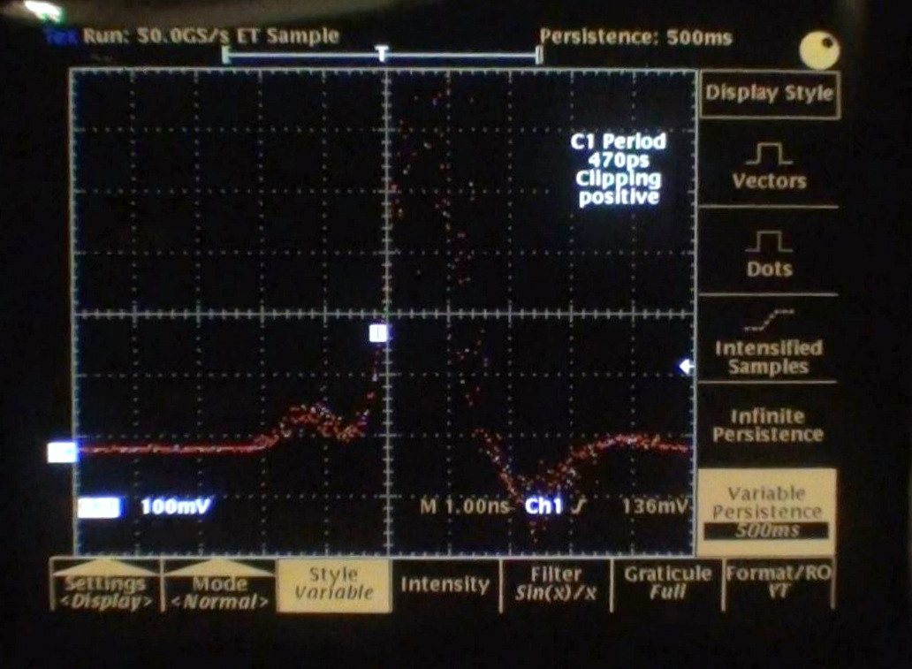
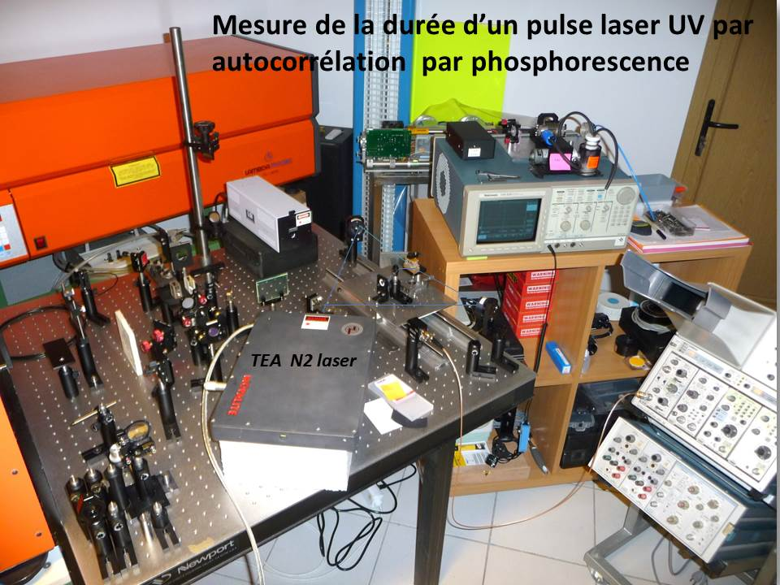
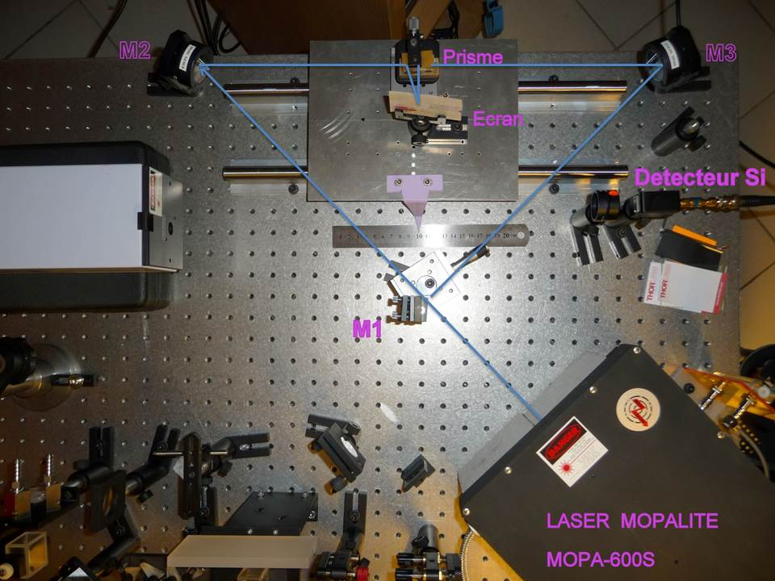
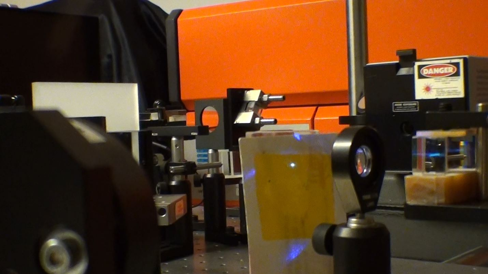
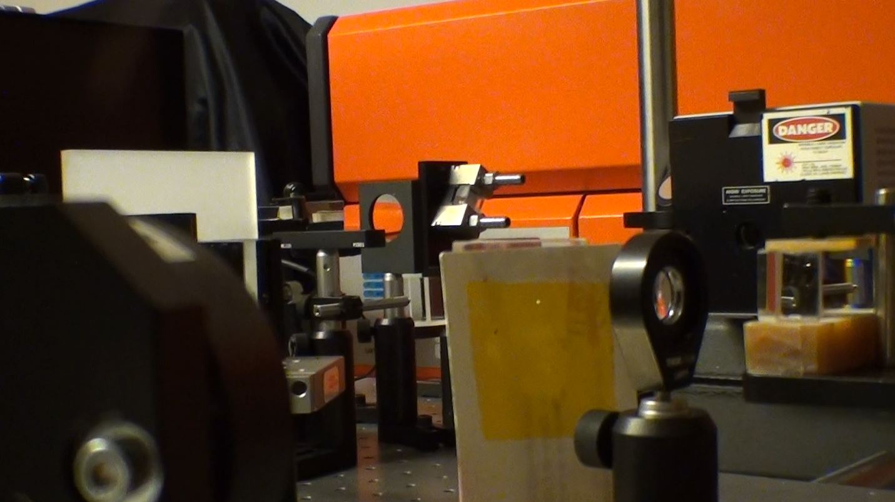
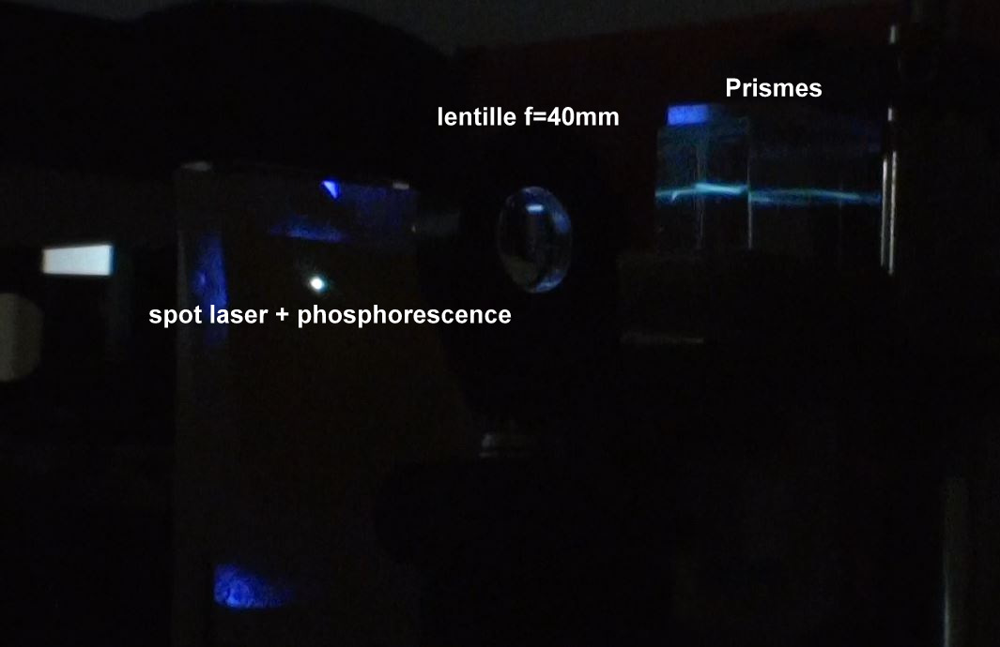
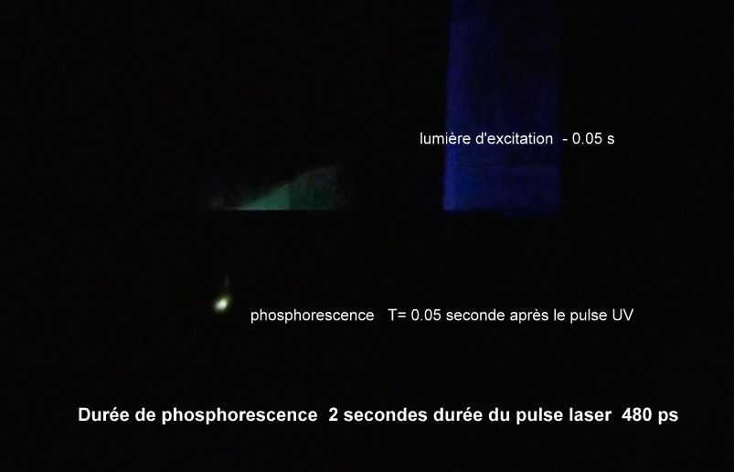
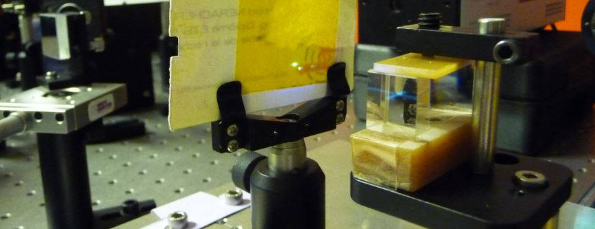

Intensimetric autocorrelation by a phosphorescence transition!
This experience is a first because in doing a bibliographic search I did not find any publication or document relating this kind of measure. Here the detector is a piece of plastic tape used for electrical insulation that I used in 1982 when I marketed my MOPALITE lasers.
At the time I found that, from a certain threshold of luminous intensity, the Scotch phosphorated for about 2 seconds at the place where the intensity was the highest.
I told myself that there must be a non-linear absorption and re-emission effect that would allow intensimetric autocorrelation to measure the duration of a UV laser pulse.
Measuring by translating the tape on the mobile cart I get the phosphorescence on a displacement of 70mm which corresponds to 460ps duration of pulse.

On the oscilloscope the half-life is 470ps! The most astonishing thing is to be able to determine a pulse laser duration in the picosecond scale with a detector having a response time in the domain of the second!
In fact this is not particularly surprising! indeed, the optical self-correlator makes it possible to circumvent this slowness by transposing the temporal phenomena in the spatial domain, the response time of the detector is then no longer a limitation.
The next step is to explain the physical processes that cause phosphorescence?
HD Video







The MOPALITE MOPA-600 laser produces pulses of 600kW for 500 picoseconds. The beam is divided into 2 beams against propagating the same intensity (300kW each).
Two prisms return the 2 beams that are superimposed on a plastic screen containing a substance capable of phosphorescing.